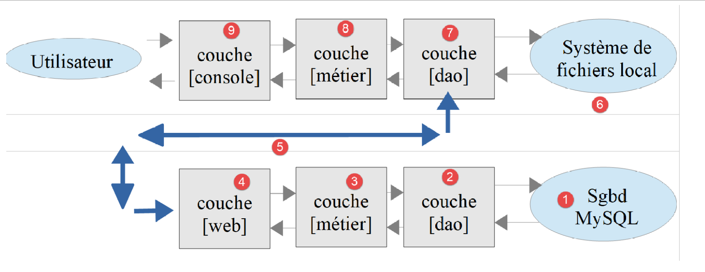

1. مقدمة إلى لغة ECMASCRIPT 6
ملف PDF لهذه المقالة متاح |هنا|.
الأمثلة الواردة في هذه المقالة متاحة |هنا|.
هذا المستند جزء من سلسلة مكونة من أربع مقالات:
- [مقدمة إلى ECMASCRIPT 6 من خلال أمثلة]. هذا هو المستند الحالي؛
- [مقدمة إلى إطار عمل VUE.JS من خلال أمثلة]؛
- [مقدمة إلى إطار عمل NUXT.JS من خلال أمثلة]؛
هذه جميعها وثائق للمبتدئين. تتبع المقالات تسلسلاً منطقياً ولكنها مرتبطة ببعضها بشكل غير وثيق:
- تقدم الوثيقة [1] لغة PHP 7. يجب على القراء المهتمين بلغة PHP فقط وليس بلغة JavaScript التي تتناولها المقالات التالية التوقف عند هذه النقطة؛
- تهدف الوثائق [2–4] إلى إنشاء عميل JavaScript لخادم حساب الضرائب الذي تم تطويره في الوثيقة [1]؛
- تتطلب أطر عمل JavaScript [Vue.js] و [Nuxt.js] في المقالتين 3 و 4 معرفة بأحدث إصدارات ECMAScript، وتحديدًا الإصدار 6. ولذلك، فإن الوثيقة [2] مخصصة لأولئك الذين ليسوا على دراية بهذا الإصدار من JavaScript. وهي تشير إلى خادم حساب الضرائب الذي تم بناؤه في الوثيقة [1]. ولذلك، سيحتاج قراء [2] أحيانًا إلى الرجوع إلى الوثيقة [1]؛
- بمجرد إتقان ECMASCRIPT 6، يمكننا الانتقال إلى إطار عمل VUE.JS، الذي يسمح بإنشاء عملاء JavaScript يعملون في متصفح في وضع SPA (تطبيق صفحة واحدة). هذا هو المستند [3]. وهو يشير إلى كل من خادم حساب الضرائب الذي تم إنشاؤه في المستند [1] ورمز عميل JavaScript المستقل الذي تم إنشاؤه في [2]. لذلك، سيحتاج قراء [3] أحيانًا إلى الرجوع إلى الوثيقتين [1] و[2]؛
- بمجرد إتقان VUE.JS، يمكنك الانتقال إلى إطار عمل NUXT.JS، الذي يسمح لك بإنشاء عملاء JavaScript يعملون في متصفح في وضع SSR (Server Side Rendered). وهو يشير إلى خادم حساب الضرائب الذي تم إنشاؤه في الوثيقة [1]، ورمز عميل JavaScript المستقل الذي تم إنشاؤه في [2]، وتطبيق [vue.js] الذي تم تطويره في الوثيقة [3]. لذلك سيحتاج قراء [4] أحيانًا إلى الرجوع إلى الوثائق [1] و[2] و[3]؛
يمكن تحسين أحدث إصدار من خادم حساب الضرائب الذي تم تطويره في الوثيقة [1] بعدة طرق:
- الإصدار الحالي يركز على الخادم. الاتجاه السائد حاليًا (يوليو 2019) هو نحو بنية العميل-الخادم:
- يعمل الخادم كخدمة JSON؛
- تُستخدم صفحة ثابتة أو ديناميكية كنقطة دخول لتطبيق الويب. تحتوي هذه الصفحة على HTML/CSS بالإضافة إلى JavaScript؛
- يتم إنشاء الصفحات الأخرى لتطبيق الويب ديناميكيًا بواسطة JavaScript:
- يمكن إنشاء صفحة HTML عن طريق تجميع أجزاء ثابتة، مقدمة من نفس الخادم الذي يقدم الصفحة الرئيسية، أو إنشاؤها بالكامل بواسطة JavaScript؛
- تعرض هذه الصفحات المختلفة البيانات المطلوبة من خدمة JSON؛
وبالتالي، يتم توزيع العمل بين العميل والخادم. وبفضل انخفاض الحمل على الخادم، يمكنه خدمة عدد أكبر من المستخدمين.
وتكون البنية المطابقة لهذا النموذج كما يلي:

JS: جافا سكريبت
يتم تنفيذ كود JavaScript على جانب العميل:
- من خدمة تقدم صفحات أو أجزاء ثابتة أو غير ثابتة؛
- خدمة JSON؛
وبالتالي، فإن كود JavaScript هو عميل JSON، وبهذه الصفة، يمكن تنظيمه في طبقات [UI، منطق الأعمال، DAO] (UI: واجهة المستخدم)، تمامًا مثل عملاء JSON المكتوبين بلغة PHP. في النهاية، يقوم المتصفح بتحميل صفحة واحدة فقط — الصفحة الرئيسية. يتم جلب جميع الصفحات الأخرى وعرضها بواسطة JavaScript. يُطلق على هذا النوع من التطبيقات اسم SPA (تطبيق صفحة واحدة) أو APU (تطبيق صفحة واحدة).
هذا النوع من التطبيقات هو أيضًا جزء مما يُعرف بتطبيقات AJAX: JavaScript غير المتزامن و XML
- غير متزامن: لأن استدعاءات عميل JavaScript لخادم JSON غير متزامنة؛
- XML: لأن XML كانت التقنية المستخدمة قبل ظهور JSON. ومع ذلك، تم الاحتفاظ باختصار AJAX؛
سنستكشف هذه البنية في الفصول القادمة. على جانب العميل، سنستخدم إطار عمل JavaScript [Vue.js] [https://vuejs.org/] لكتابة عميل JavaScript لخادم PHP JSON الذي وصفناه في الوثيقة [1].
[Vue.js] هو إطار عمل JavaScript. لفهمه، يجب أن تكون بارعًا في هذه اللغة. في هذا المستند، نقدم معيار ECMAScript 6، وهو أحدث (اعتبارًا من عام 2019) توحيد لمعايير هذه اللغة. يمكن العثور على تاريخ ودور ECMAScript على ويكيبيديا [https://fr.wikipedia.org/wiki/ECMAScript].
يقدم هذا المستند قائمة ببرامج JavaScript النصية في مجالات مختلفة (هياكل اللغة، والوصول إلى قواعد البيانات، والوصول إلى الإنترنت، والبرمجة الطبقية، والبرمجة عبر الواجهات). ويختتم المستند بتطبيقين:
تطبيق وحدة التحكم الذي سيعمل كعميل لخادم حساب الضرائب المدمج في الوثيقة [1]. سيكون لهذا العميل نفس بنية عميل وحدة التحكم PHP المدمج في الوثيقة [1]:

- ستكون الطبقات [7–9] هي طبقات عميل JavaScript الذي يعمل في وحدة التحكم؛
- الطبقات [1–4] هي طبقات خادم PHP 7 المضمن في الوثيقة [1]؛
- على عكس عميل وحدة التحكم PHP المضمن في الوثيقة [1]، لن يكون هناك أي تفاعل مع نظام الملفات المحلي [6]؛
لدينا هنا تطبيق عميل/خادم حيث يكون العميل تطبيق وحدة تحكم. سيتم كتابة تطبيق ثانٍ حيث سيتم نقل كود الطبقات [7–9] إلى متصفح. سنكون عندئذ جاهزين للتعامل مع أطر عمل JavaScript للمتصفح في الوثيقتين [3] و[4].
النصوص البرمجية في هذا المستند مزودة بتعليقات، كما تم إعادة إنتاج مخرجات وحدة التحكم الخاصة بها. يتم تقديم تفسيرات إضافية في بعض الأحيان. يتطلب المستند قراءة نشطة: لفهم النص البرمجي، يجب عليك قراءة الكود الخاص به والتعليقات ونتائج التنفيذ.
الأمثلة الواردة في هذا المستند متاحة |هنا|.
يمكن اختبار تطبيق خادم PHP 7 |هنا|.
سيرج تاهي، أكتوبر 2019